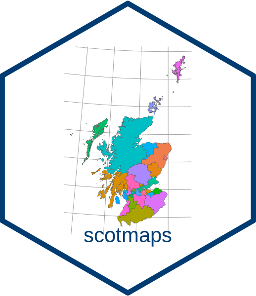
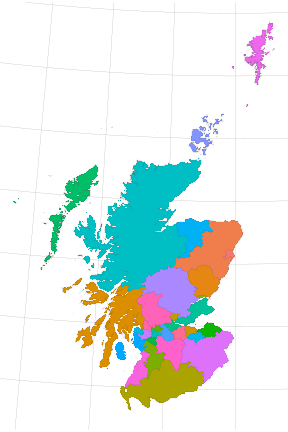
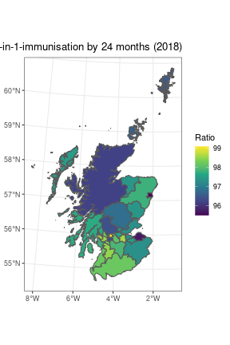
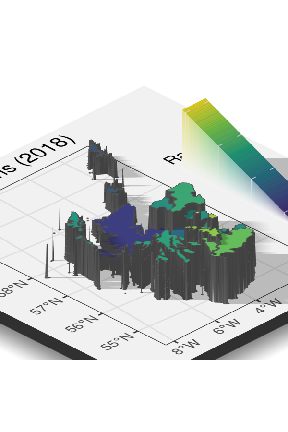
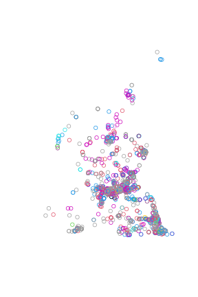
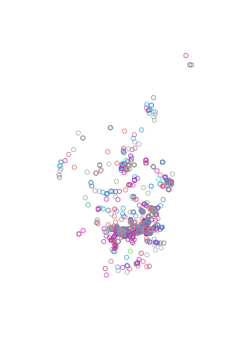
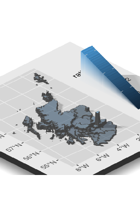

Use scotmaps to download map layers from www.spatialdata.gov.scot with single line of R code. Here we provide a few quick examples of how the package can be used.
See all the layers available:
Either use get_layer("name of your layer") or name_of_layer(). For example you can down the marine areas using either of these functions:
ma <- get_layer("marine_areas")
# or...
ma <- marine_areas()The first time you run a layer function, you will be prompted for permission to download that layer to your hard drive.
If you have already downloaded a layer you can see if it’s cached by using cached_layers().
To plot a map we’ll use the ggplot2 library. This package helps to format and present our data layers.
library(ggplot2)
la <- local_authorities()
p <- ggplot(la) +
geom_sf(data = la, aes(fill = local_authority), size = 0.05) +
guides(fill = FALSE) +
scale_fill_discrete() +
theme_void() +
theme(panel.grid.major = element_line(colour = "grey60", size = 0.1))
p
The geom_st recognises the simple feature or sf map downloaded layer and plots at a spatial object in the correct map projection.
Let’s download data from statistics.gov.scot and display it on a map.
# install.packages("devtools")
# devtools::install_github("datasciencescotland/opendatascot")
library(opendatascot)
library(tidyverse)
# Immunisation data
immune <- ods_dataset("6-in-1-immunisation", geography = "la")
immune <- immune %>% filter(vaccinationUptake == "vaccinated-by-24-months",
measureType == "ratio",
refPeriod == 2018)
immune <- immune %>% mutate(value = as.numeric(value))
# Join to local authority spatial layer
la_immune <- inner_join(la, immune, by = c("code" = "refArea"))
p2 <- la_immune %>%
ggplot() +
geom_sf(aes(fill = value)) +
scale_fill_viridis_c("Ratio") +
theme_bw() +
labs(title="6-in-1-immunisation by 24 months (2018)")
p2
Looks good but what about in 3D? Don’t worry, rayshader package has your back.
# devtools::install_github("tylermorganwall/rayshader")
library(rayshader)
plot_gg(p2, multicore = TRUE)
render_camera(zoom = 0.4, theta = -45, phi = 30)
Sys.sleep(0.2)
render_snapshot()
rgl::rgl.close()Let’s calculate bicycle parking capacity per person for each local authority in Scotland.
First, download the bicycle parking data from OpenStreetMap. OpenStreetMap is open data, licensed under the Open Data Commons Open Database License (ODbL) copyright OpenStreetMap contributors.
# install.packages("osmdata")
library(osmdata)
scot <- getbb ("scotland", format_out = "polygon")
bicycles <- opq(scot[[3]][3]) %>%
add_osm_feature(key = "amenity",
value = "bicycle_parking",
value_exact = TRUE) %>%
osmdata_sf()
# Use osm point data
points <- bicycles$osm_points
# Tidy up missing capacity values
points$capacity <- as.numeric(points$capacity)
# Default if capacity not recorded
points$capacity[is.na(points$capacity)] <- median(points$capacity, na.rm = T)
# Convert to same crs as default scotmaps
points <- st_transform(points, crs = 27700)
plot(st_geometry(points), col = points$capacity)
Our OpenStreetMap query returned a wider area than Scotland, so let’s join points to associated Scottish local authority areas.
points <- st_join(points, la, join = st_within)
# Cropped points with a local authority
plot(st_geometry(points[!is.na(points$local_authority), ]), col = points$capacity)
Now we can sum capacity available in each authority.
capacity <- points %>%
group_by(code) %>%
summarise(total = sum(capacity)) %>%
st_set_geometry(NULL) # remove the geometry column
#> `summarise()` ungrouping output (override with `.groups` argument)Next, download census population data using opendatascot package and calculate bicycle parking capacity per person.
# devtools::install_github("datasciencescotland/opendatascot")
library(opendatascot)
population <- ods_dataset("census-population-2001", geography = "la")
population <- population %>%
filter(measureType == "count",
age == "all",
gender == "all")
total_points <- inner_join(capacity, population, by = c("code" = "refArea"))
# Calculate the pop / bicycle ratio
total_points$value <- as.numeric(total_points$value)
total_points <- total_points %>% mutate(ratio = total / value)
# Join to authority areas
la_totals <- inner_join(la, total_points, by = c("code" = "code"))Plot data on map:
# devtools::install_github("tylermorganwall/rayshader")
library(rayshader)
p3 <- ggplot(la_totals) +
geom_sf(aes(fill = ratio), alpha = 0.5) +
scale_colour_viridis_c()
plot_gg(p3, multicore = TRUE)
render_camera(zoom = 0.4, theta = -45, phi = 30)
Sys.sleep(0.2)
render_snapshot()
rgl::rgl.close()Alternatively, we could present the data as a league table:
total <- st_set_geometry(la_totals, NULL)
total <- mutate(total, "per_100" = ratio * 100)
# make table
arrange(total, desc(per_100)) %>%
mutate('No.' = seq_along(local_authority)) %>%
select(No.,
"Local Authority" = local_authority,
"Capacity per 100 people" = per_100) %>%
knitr::kable()| No. | Local Authority | Capacity per 100 people |
|---|---|---|
| 1 | City of Edinburgh | 3.2452566 |
| 2 | Dundee City | 1.1251999 |
| 3 | Fife | 1.0079301 |
| 4 | Glasgow City | 0.9571373 |
| 5 | Midlothian | 0.9241299 |
| 6 | East Lothian | 0.8458396 |
| 7 | Aberdeen City | 0.7594579 |
| 8 | Stirling | 0.7539554 |
| 9 | Highland | 0.7318801 |
| 10 | West Lothian | 0.6659778 |
| 11 | Orkney Islands | 0.6443232 |
| 12 | Perth and Kinross | 0.4616559 |
| 13 | Eilean Siar | 0.4075164 |
| 14 | North Lanarkshire | 0.3821632 |
| 15 | South Lanarkshire | 0.3431321 |
| 16 | West Dunbartonshire | 0.3127075 |
| 17 | Argyll and Bute | 0.2978994 |
| 18 | East Renfrewshire | 0.2541680 |
| 19 | East Dunbartonshire | 0.2392764 |
| 20 | Falkirk | 0.2383068 |
| 21 | South Ayrshire | 0.2212370 |
| 22 | Dumfries and Galloway | 0.2206206 |
| 23 | Scottish Borders | 0.2098085 |
| 24 | Renfrewshire | 0.2024678 |
| 25 | Inverclyde | 0.1686401 |
| 26 | Shetland Islands | 0.1637257 |
| 27 | Aberdeenshire | 0.1617659 |
| 28 | Moray | 0.1230734 |
| 29 | Clackmannanshire | 0.1206398 |
| 30 | North Ayrshire | 0.0868816 |
| 31 | Angus | 0.0571956 |
| 32 | East Ayrshire | 0.0382584 |